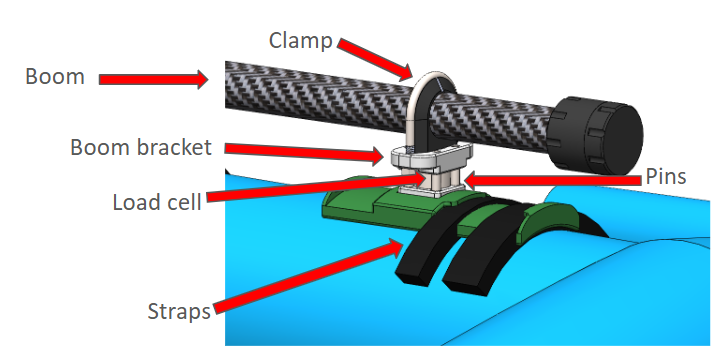
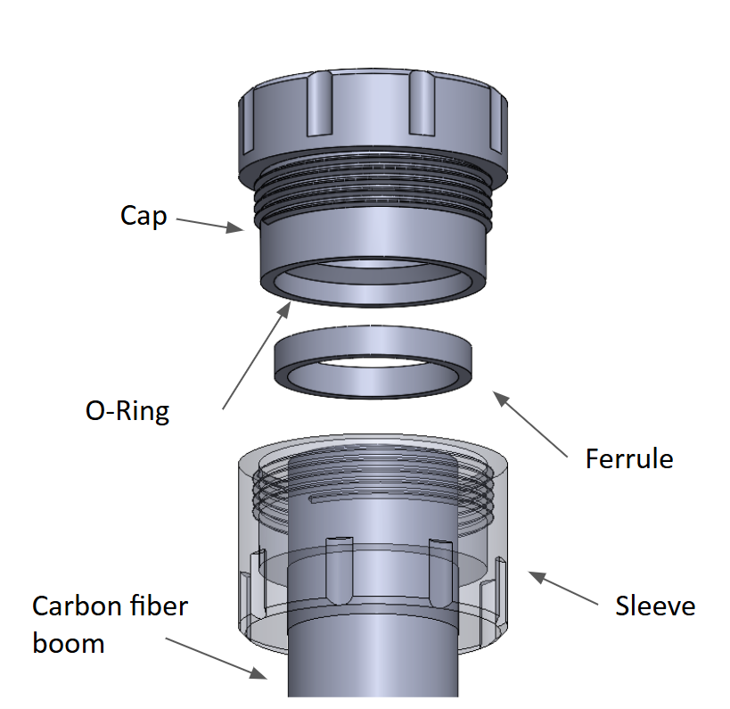
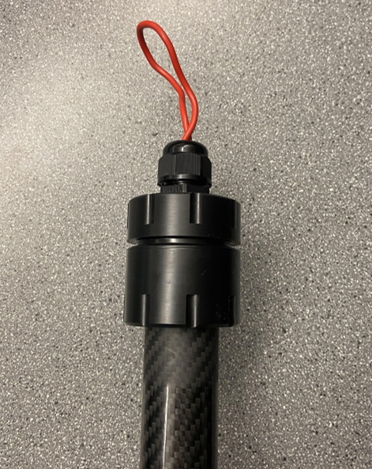
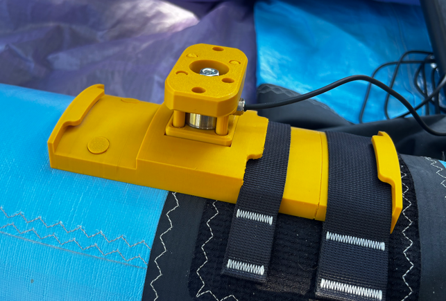

A robust, fully sealed force-sensing system for R&D purposes, currently in the building and testing phase. Wind sport wing makers had no quantitative way to measure the forces a rider generates through the handle ‐ forces that directly drive wing performance. The goal was to design, build, and validate a system that logs front- and rear-hand loads during live saltwater sessions while staying accurate, waterproof, and not altering the riding experience.
The rider's hands act on a carbon fiber auxiliary boom which doubles as the handle and electronics housing. A custom designed wing attachment allows for the measurement handle to be swapped easily with the original wing boom/handles for a non-invasive and easy to remove testing system. Using two inline load cells, one front and one rear lets each hand's force be captured independently through the session. Dowel pins were designed to prevent any bending of the load cell.

The electronics live sealed inside the carbon fiber boom, so the end caps had fully waterproof and corrosion-resistant for repeated saltwater use. The end cap design uses a ferrule-compression seal: a sleeve slides onto the boom, then a ferrule, then a threaded cap carrying an O-ring seated in a groove.

Threading the cap down compresses the ferrule between the cap and sleeve, converting that make-up force into axial compression on the O-ring -energizing it against the groove and tube to form the seal. Roughening the boom's outer surface on the lathe measurably improved grip and seal reliability. The machined caps below include two-wire cable gland for the load cell leads.

Inside the sealed boom, an ESP32-S3 microcontroller reads the load cells through dual 24-bit ADCs, alongside a 9-DOF IMU for orientation tracking. The package runs off four isolated power rails and a LiPo pack, and logs synchronized force and orientation data to an SD card for post-session analysis.
The structure was simulated in a worst-case gust load to ensure reliability and safety. Power and error budgets were created alongside an FMEA / HARA risk analysis. The seal was validated with O-ring squeeze, gland-fill, and sealing-pressure-margin calculations to define a safe operating envelope for depth and pressure.
The wing force measurement system is currently (July 2026) being tested for waterproofing, force measurement accuracy, and durability. Prototype is scheduled to be on the water by mid July, stay tuned!
